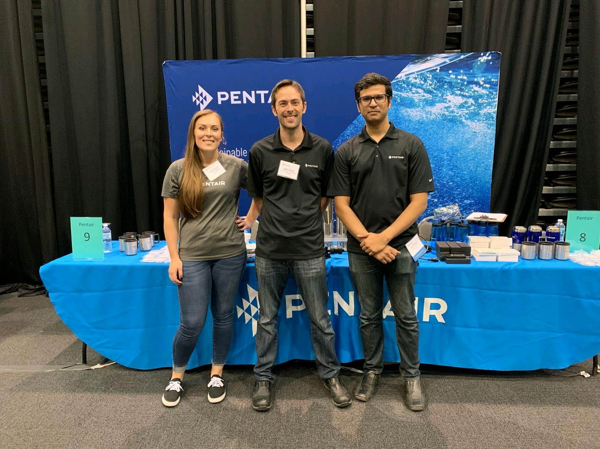

Vijayraj Mahida
programmer, artist, storyteller
I draw from a diverse set of skills that intersect between computer science and art. In 2002 I got my hands on my first game console the Nintendo Gamecube, and I spent hours exploring worlds and solving puzzles. In 2012 I took my first programming class in Java where I made a Donkey Kong inspired platformer. In university I worked on projects that combined my passion for computer graphics, human computer interaction, and robotics.
As an undergraduate researcher at the Electronic Visualization Lab (EVL) I was awarded an honorary mention in the IEEE Visual Analytics Science and Technology competition in 2017. At my time in university I worked on projects both in and out of class that involved virtual reality, data visualization, electronic fabrication, and physical computation. I graduated from the University of Illinois at Chicago with a B.S. of Computer Engineering in 2018.
I’m constantly trying to evolve my work with computers and art. I believe powerful stories can be told at this intersection. Here’s some stuff I have worked on…
As an undergraduate researcher at the Electronic Visualization Lab (EVL) I was awarded an honorary mention in the IEEE Visual Analytics Science and Technology competition in 2017. At my time in university I worked on projects both in and out of class that involved virtual reality, data visualization, electronic fabrication, and physical computation. I graduated from the University of Illinois at Chicago with a B.S. of Computer Engineering in 2018.
I’m constantly trying to evolve my work with computers and art. I believe powerful stories can be told at this intersection. Here’s some stuff I have worked on…
Projects
2019

Pentair Flow & Filtrations
Software Engineer (June 2018 - Present)
I am part of the new product development team an interdisciplinary team of software, electrical, and mechanical engineers that researches and develops advanced solutions that integrates big data and small interconnected devices to answer the larger questions about water based systems (which ranges from connected embedded systems to smart applications running on more powerful machines).
explore
2018

Continuum
Undergraduate Researcher (August 2017 - May 2018)
Continuum unifies the functionality of high-resolution displays and computer enhanced group collaboration with arrays of ambient sensors providing users the opportunity to collaborate with local and remote colleagues and their data more effectively by
giving the room the ability to anticipate their needs. I worked on integrating sensor inputs like continuous speech recognition, created/managed server and database to host data, implemented authentication and authorization for multiple clients, and expanding interactivity with gestures (via Kinect and Optitrak). Image by Jonas Talandis, EVL.
explore

Articulate
Undergraduate Researcher (May 2017 - May 2018)
Articulate is a semi-automated visual analytic system that is guided by a conversational user interface to allow users to verbally describe and then manipulate what they want to see. Joined project in Summer 2017 and expanded speech recognition to integrate Alexa and created/managed noSQL database with MongoDB into SAGE2. Image by Lance Long, EVL.
explore
Interdisciplinary Product Development, Caterpillar
Senior Design Project (August 2017 - May 2018)
Design and develop a product for Caterpillar in an interdisciplinary team made of industrial/graphic designers, marketing, and computer engineering students over the course of one year. Using an iterative process of rapid prototyping based on careful market/engineering research to integrate powerful human centric innovation into new areas.
We wanted to develop a technology not for next year but for the next decade where natural interfaces using small wireless connected devices are used to augment human capabilities and enhance the way we live.
explore
Electronic Carnival
Embedded Media: Physical Computing, Individual Project (January 2018 - May 2018)
From the screenshot you can see the newly created VR room by the New Media Art Lab which uses room scale VR with the HTC Vive, gesture/depth/rgb imagery with Microsoft’s Kinect,
and hand gesture recognition with Leap Motion (now mounted on the Vive)! I began development of this room in March of 2018.
explore
2017
IEEE VAST Challenge 2017
Participant (May 2017 - October 2017)
Solution created in collaboration with Bartosz Kupiec, Andrew Burks, Timothy Luciani, and Dr. Elisabeta Marai (faculty advisor) for VAST mini-challenge 3. We dealt with multispectral satellite data to produce the small multiples and linked
semantic zooming. Bartosz and I did most of the work creating the interface and collaborated with rest of the team to develop the science and our idea. I went to Phoenix, Arizona to present our work.
explore

Engineering Design Team
Captain (August 2017 - May 2018), Software Developer (August 2016 - July 2017)
Captain for Robobrawl 2018 competition (see top image). Which means developing the mechanical, electrical, and software aspects of the robot. Competition was on March 9-10 in UIUC!
Software developer for team GlaDOS in 2017 Midwestern Robotics Design Competition (see bottom image). Team members (aside from myself): Hassan Ali (Captain), Tomoki Kamitani (Co-Captain), Klaidi Cako (Mechanical Engineer), and Jude Ade Nwokenkwo (Mechanical Engineer). I created a vision system that used an ADHOC network to provide live video feed to connected clients
explore
Software developer for team GlaDOS in 2017 Midwestern Robotics Design Competition (see bottom image). Team members (aside from myself): Hassan Ali (Captain), Tomoki Kamitani (Co-Captain), Klaidi Cako (Mechanical Engineer), and Jude Ade Nwokenkwo (Mechanical Engineer). I created a vision system that used an ADHOC network to provide live video feed to connected clients
2016

Hybrid VR Experience
Independent Project (August 2015 - May 2016)
Project awarded grant by UIC Honors College with Dr. Mitchell Theys as project advisor. Developed VR application with Oculus Rift DK2 that recreated UIC's East Campus with 3D SketchUp mass models provided by the
Office of Facility and Space planning. Optimized models with 3DS Max then piped into Unreal Engine 4 and later Unity to visualize East Campus (provides scale and direction).
explore

MIPS Assembler and CPU
Independent Project (August 2016 - December 2016)
Developed a MIPS assembler that supports instructions (written in C) and Data Path (designed in Verilog) to take MIPS assembly and feed it into my custom designed CPU model. In class presentation was done explaining the creation process. Project was done under the guidance of Professor Paolo Vinella.